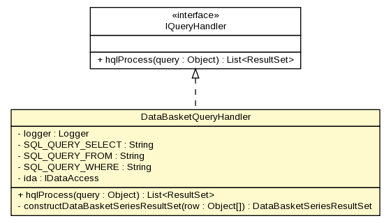

gov.nih.nci.ncia.queryhandler
Class DataBasketQueryHandler

java.lang.Object
 gov.nih.nci.ncia.queryhandler.DataBasketQueryHandler
gov.nih.nci.ncia.queryhandler.DataBasketQueryHandler
- All Implemented Interfaces:
- IQueryHandler
public class DataBasketQueryHandler
- extends java.lang.Object
- implements IQueryHandler
Handles a query that retrieves series to be placed in the
data basket.
| Methods inherited from class java.lang.Object |
clone, equals, finalize, getClass, hashCode, notify, notifyAll, toString, wait, wait, wait |
logger
private static org.apache.log4j.Logger logger
SQL_QUERY_SELECT
private static java.lang.String SQL_QUERY_SELECT
SQL_QUERY_FROM
private static java.lang.String SQL_QUERY_FROM
SQL_QUERY_WHERE
private static java.lang.String SQL_QUERY_WHERE
ida
private IDataAccess ida
DataBasketQueryHandler
public DataBasketQueryHandler()
hqlProcess
public java.util.List<ResultSet> hqlProcess(java.lang.Object query)
throws java.lang.Exception
- Given a DataBasketQuery returns DataBasketSeriesResultSet objects.
The query is to return a bunch of attributes for a list of series.
Without a SeriesIdCriteria, this will apparently return every series
in the database. Probably not a good idea....
For the given query object, turn it into HQL and send it to the data access layer
for processing.
A ResultSet is just a marker interface, so in reality, just about anything
could come back from this invocation depending on the concrete impl for the
query handler.
Not sure why an _ordered_ list of these ResultSet things come back
either? The series query returns a list of image result sets which sort of makes sense.... but why
not just return one result set that allows access to the list of image result sets?
The top level series result set might contain useful info too? Don't know.....?
- Specified by:
hqlProcess in interface IQueryHandler
- Throws:
java.lang.Exception
constructDataBasketSeriesResultSet
private DataBasketSeriesResultSet constructDataBasketSeriesResultSet(java.lang.Object[] row)